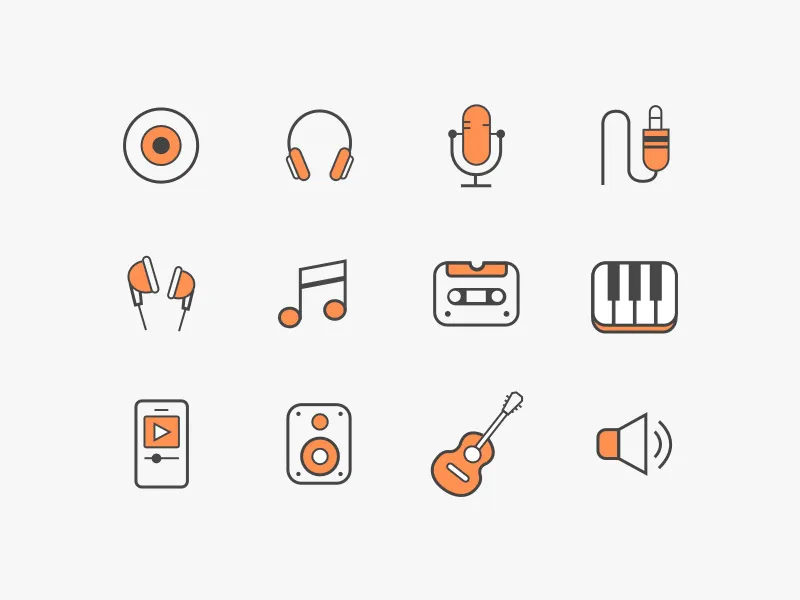
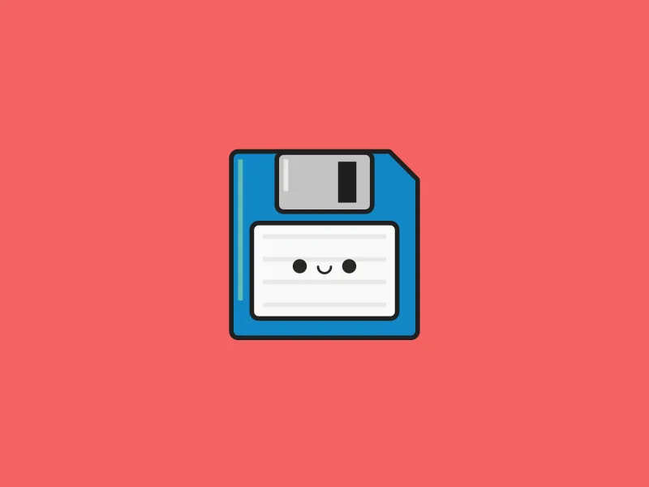
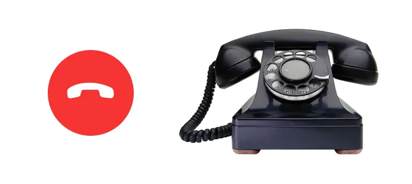
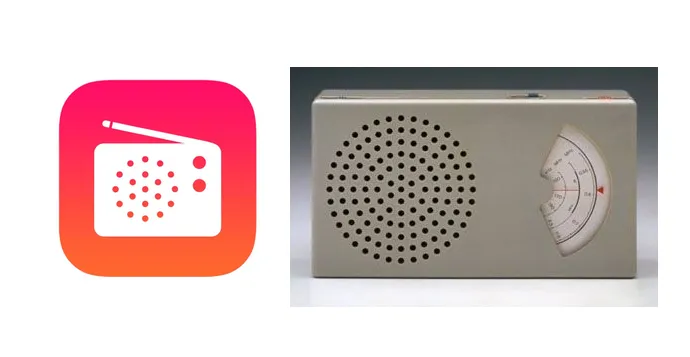
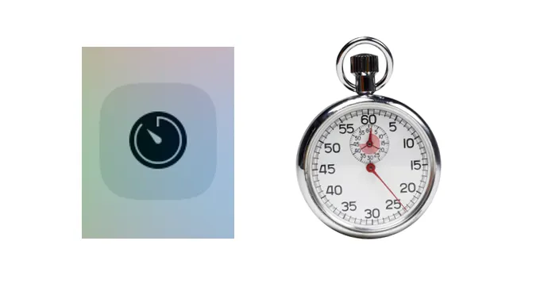
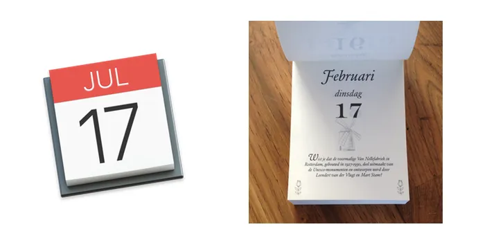
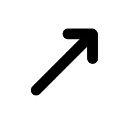

The Future of Icons is No Shapes?
Introduction
If you’re a designer or developer you probably working with icons a lot. They’re everywhere. The main goal for every icon designer — is to make its shapes so clear, so it can be understandable without labels, without words. Even in foreign cultures.

Few years ago there is one popular topic in designers circles “why we should not use floppy disk icons anymore”, remember? The idea is simple, modern computers has changed, we don’t have floppy disk so modern user can’t associate the idea of save something with a floppy disk shape.
Floppy disk icon by Dave Gamez

Evolution Of Physical Things
In the past to make something new, some object or a machine we have to build it from metal, plastic and other stuff. Objects has a form. This form was based on its objectives.
But after invention of processors and programming languages we realised that we can make many stuff inside digital environment. And we start convert physical objects into digital.
We don’t need paints anymore, we can paint inside a computer. We don’t need an audio tape recorder, we can digitize the sound and keep it inside MP3 and so on. The list is endless.
The Future Without Shapes
Somehow we stuck. We stuck by using physical shapes inside our digital world. Some of this objects still exist, but as poor floppy disk it will disappear.
Here is some examples. Imagine: you never seen this objects before, like nowadays kids never seen floppy. In this case how physical shapes of unknown can be good source for our digital interfaces?
Visual synonym of a “call” represented by handset. Not in production anymore. Some of modern landline phones looks more like mobile phones.

Left: iPhone icon, right: Model 302 (1937), design by Henry Dreyfuss
iTunes Radio icon vs Braun transistor T3 radio, 1958. Not in production anymore.

Timer mimic analogue timer. (Still in production?)

Tear-off calendar. Another good example. It’s paper version not in production anymore.

Suddenly I found an opposite example. An arrow.

Today we used to use it as direction pointer. But looks like it is modern representation of ancient bow arrow.
The point the whole story is: it’s time to think ahead, while it may be hard to establish new icon shapes rules, we have to keep our eyes opened for a new ideas in this area.